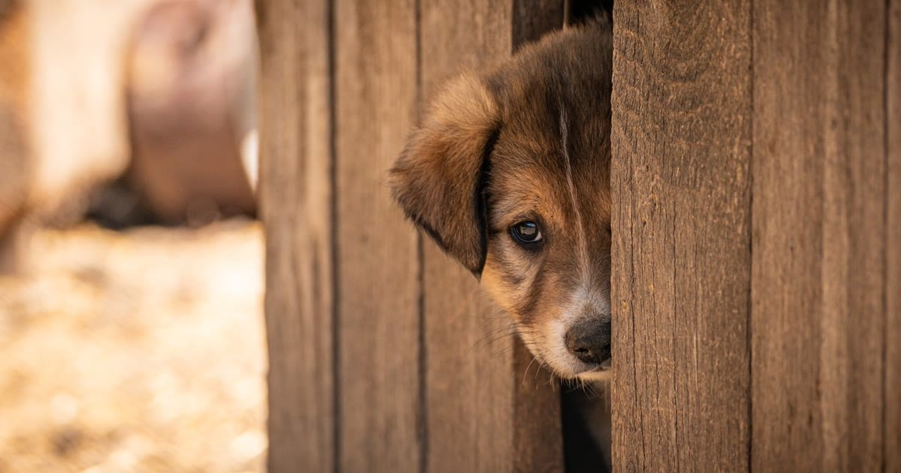
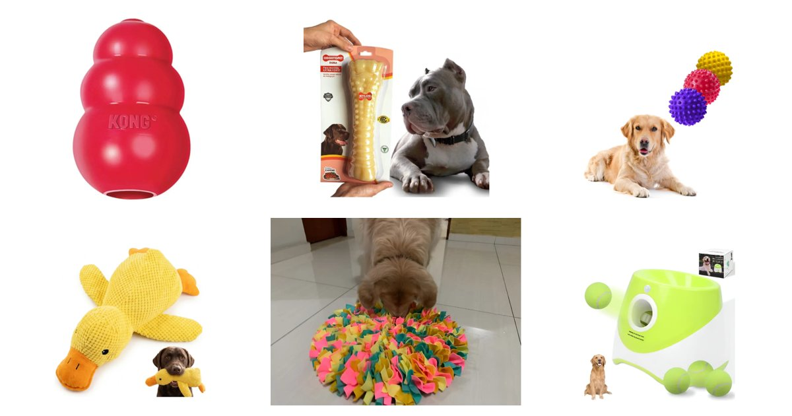
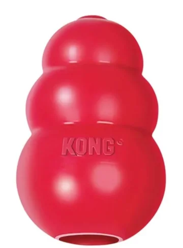
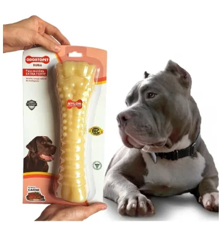
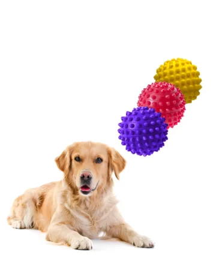
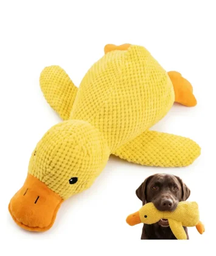
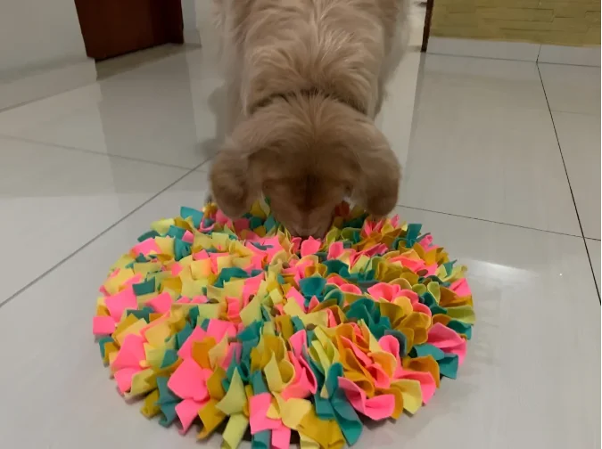
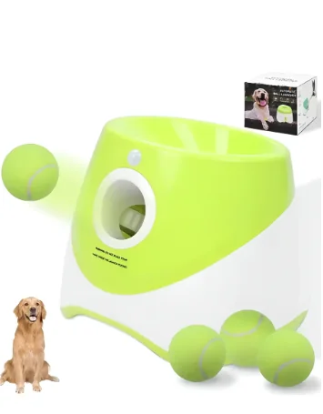

O melhor brinquedo para cachorro que fica sozinho é um brinquedo recheável de borracha, como o Kong Classic: recheado com petisco ou ração úmida, ele mantém o cão ocupado por mais tempo e aguenta ficar com ele sem supervisão. O tamanho Grande, para cães de 13 a 30 kg, custava R$ 137,04 no Mercado Livre em 17/11/2026, com nota 4,8 em 3.024 avaliações. Para cão que destrói tudo, o osso de nylon Odontopet Dura Monster (R$ 115) é a opção mais resistente. Com orçamento curto, o kit de 3 bolas maciças sai por R$ 19, mas serve só para cães pequenos e médios. A pelúcia de pato (R$ 39,90) é para o cão carinhoso que não rasga, o tapete de farejar (R$ 119) cansa a cabeça do cão antes de você sair, e o lançador automático de bolinha (R$ 364,53) é para cão pequeno com energia de sobra.
Kong Classic Grande, o recheável mais vendido: nota 4,8 em 3.024 avaliações.Link de afiliado — sem custo extra para você.
Ver preço no Mercado Livre →Escolha rápida
- Melhor para ficar sozinho: Kong Classic recheável (R$ 137,04, nota 4,8 em 3.024 avaliações)
- Para cão que destrói tudo: osso de nylon Odontopet Dura Monster (R$ 115, para cães de 40 kg ou mais)
- Mais barato: kit de 3 bolas maciças (R$ 19, para cães pequenos e médios)
- Para cão carente que não rasga: pato de pelúcia com som (R$ 39,90, 1º mais vendido em pelúcias)
- Para cão ansioso ou guloso: tapete de farejar (R$ 119)
- Automático, para cão pequeno e muito ativo: lançador de bolinhas (R$ 364,53)
A tabela mostra os seis brinquedos lado a lado. A coluna "Sozinho?" resume se o brinquedo pode ficar com o cão sem ninguém olhando, o que pesa mais aqui do que em um brinquedo comum. Preços consultados no Mercado Livre em 17/11/2026, em plena época de Black Friday, então confira no link antes de comprar.
| Brinquedo | Tipo | Preço | Porte indicado | Sozinho? | Nota no ML | |
|---|---|---|---|---|---|---|
| Kong Classic Grande | Recheável de borracha | R$ 137,04 | 13 a 30 kg (há outros tamanhos) | Sim, no tamanho certo | 4,8 (3.024) | Ver preço |
| Odontopet Dura Monster | Osso mordedor de nylon | R$ 115 | 40 kg ou mais | Sim, enquanto estiver inteiro | 4,8 (236) | Ver preço |
| Kit 3 bolas maciças | Bola de borracha, 5,5 cm | R$ 19 | Pequeno e médio | Só para cão pequeno que não destrói | 4,7 (50) | Ver preço |
| Pato de pelúcia com som | Pelúcia de 32 cm | R$ 39,90 | Qualquer porte | Só para cão que não rasga | 4,9 (251) | Ver preço |
| Tapete de farejar | Feltro, 50 cm | R$ 119 | Qualquer porte | Melhor antes de sair ou com supervisão | 4,9 (8) | Ver preço |
| Lançador automático EDY | Arremessa bolinhas de 4,8 cm | R$ 364,53 | Pequeno | Depois de o cão aprender a usar | 4,7 (45) | Ver preço |

O que funciona para um cão que só quer roer não funciona para um cão que chora na porta. Escolha pelo jeito do seu cachorro antes de olhar o preço:
| Se o seu cachorro… | Escolha | Por quê |
|---|---|---|
| Fica bem sozinho, mas se entedia | Kong recheável | O petisco dentro prende a atenção por mais tempo do que um brinquedo vazio |
| Destrói tudo o que alcança | Osso de nylon ou Kong no tamanho acima | Nylon e borracha maciça aguentam mais mordida; pelúcia e bolinha leve duram pouco |
| Fica ansioso quando você sai | Kong recheado e congelado, oferecido na saída | Lamber e roer acalmam, e a comida congelada demora mais para sair |
| Come rápido demais ou vive pedindo comida | Tapete de farejar | Ele precisa procurar cada grão com o faro, o que cansa a cabeça e desacelera a refeição |
| Gosta de carregar e dormir com brinquedo | Pelúcia | Serve de companhia, desde que ele não rasgue |
| É pequeno e tem energia de sobra | Lançador automático | Faz o cão correr atrás da bola sem você precisar arremessar |
Os dados de cada brinquedo vêm do anúncio no Mercado Livre e das avaliações publicadas por compradores, consultados em 17/11/2026. Não testamos os brinquedos; veja como escolhemos.

O Kong Classic existe desde 1976 e é o brinquedo recheável mais conhecido do mundo. Você coloca petisco, ração molhada ou ração seca dentro, e o cão passa um bom tempo lambendo, mordendo e virando o brinquedo para tirar a comida. O formato irregular faz o Kong quicar para lados imprevisíveis quando cai, o que vira brincadeira mesmo depois que o recheio acaba.
Brinquedo recheado com comida é justamente o que a ASPCA recomenda oferecer na hora em que o tutor sai, e lamber e roer tendem a acalmar o cão. O Kong ainda é resistente o bastante para ficar com ele sem ninguém olhando. Um dos compradores conta que comprou por indicação do adestrador, justamente para quando a cadela precisa ficar sozinha.
O anúncio explica como começar: encha com pedaços pequenos, sem apertar, para o cão aprender que dá para tirar a comida. Com o tempo, aperte mais o recheio para o desafio durar mais.
| Preço | R$ 137,04 (de R$ 179,90, 23% de desconto), consultado em 17/11/2026 |
|---|---|
| Tamanho do anúncio | Grande, para cães de 13 a 30 kg (10 cm de altura). O anúncio também vende os tamanhos P, GG e GGG |
| Material | Borracha natural, sem cheiro sintético segundo os compradores |
| Avaliações | 4,8 de 5 em 3.024 avaliações e +1.000 vendidos; 4º mais vendido em dispensadores de petisco |
| Vendedor | Tô Com Tudo, MercadoLíder, envio Full |
"O kong apresentou uma boa resistência pois está aguentando o tranco. E ainda não coloquei o petisco! O cão andava ansioso procurando caixa e rolo de papelão para..."
★★★★★ comprador no Brasil, Mercado LivreO resumo de opiniões do Mercado Livre, gerado a partir de 1.379 comentários, destaca a resistência, a durabilidade e que o Kong mantém o cão entretido por longos períodos quando recheado.
🦴 Kong Classic recheável, nota 4,8 em mais de 3 mil avaliações: veja o preço de hoje.
Ver preço no Mercado LivreLink de afiliado: podemos receber uma comissão por compras feitas através deste link, sem custo adicional para você.

Para o cachorro que transforma pelúcia em enchimento em dez minutos, a saída é um material mais duro. O Dura Monster é um osso mordedor de nylon atóxico com aroma de carne, feito para cães de porte grande ou gigante com o hábito de roer. As saliências na superfície ajudam a limpar os dentes enquanto o cão mastiga, e o corpo afunilado facilita segurar com as patas.
O resumo de opiniões do Mercado Livre destaca a resistência com cães de mordida forte, como pitbulls e pastores-alemães, e um comprador conta que o seu American Bully de 52 kg passou duas horas roendo sem estragar o osso.
Dois cuidados que o próprio anúncio aponta: troque o osso quando as pontas ficarem muito gastas ou pontiagudas, e, se você tem mais de um cão, compre o tamanho do maior, para o grande não engasgar com um osso feito para o pequeno.
| Preço | R$ 115 (de R$ 140, 17% de desconto), consultado em 17/11/2026 |
|---|---|
| Indicação | Cães de 40 kg ou mais, com dentição permanente. Para cães menores, a Odontopet vende tamanhos menores |
| Medidas | 27 cm de comprimento, 9 cm de largura e 4,5 cm de altura |
| Material | Nylon super-resistente atóxico, com aroma de carne |
| Avaliações | 4,8 de 5 em 236 avaliações e +1.000 vendidos |
| Vendedor e garantia | Vicrus Comércio, MercadoLíder Gold, envio Full; 90 dias de garantia de fábrica |
"Até agora, está aguentando bem!!! rs. Tenho um american bully de 52kg e já tem umas duas horas que ele está mordendo, nunca um brinquedo durou tanto tempo..."
★★★★★ comprador no Brasil, Mercado Livre💪 Osso de nylon Odontopet para cão que destrói tudo: veja o preço de hoje.
Ver preço no Mercado LivreLink de afiliado: podemos receber uma comissão por compras feitas através deste link, sem custo adicional para você.

Bola é um dos brinquedos para cachorro mais procurados, e este kit traz três bolinhas maciças de borracha com cravos por R$ 19, o que dá para fazer rodízio e ter sempre uma "nova". Os cravos deixam a bola com um quique menos previsível e uma textura que muitos cães gostam de mastigar.
Atenção ao tamanho: o título do anúncio fala em "bola para Golden", mas cada bolinha tem 5,5 cm de diâmetro, e o próprio vendedor recomenda o kit para cães de pequeno e médio porte. Para um Golden ou outro cão grande, uma bola desse tamanho pode passar para o fundo da garganta. Para cão grande, procure bola maior que a boca dele (veja o que não deixar com o cão sozinho).
As avaliações também dizem que o material é mais macio do que o nome "maciça" sugere: um comprador diz que a bola é destruída rápido até por cães pequenos. Para cão que só rola e carrega a bola, funciona bem; para cão que mastiga até rasgar, não é brinquedo para deixar sozinho.
| Preço | R$ 19 pelas 3 bolas, consultado em 17/11/2026 |
|---|---|
| Medidas | 5,5 cm de diâmetro cada; cores sortidas |
| Material | Borracha |
| Indicação do vendedor | Cães de pequeno e médio porte |
| Avaliações | 4,7 de 5 em 50 avaliações e +1.000 vendidos |
| Vendedor e garantia | Santana Ecomm, MercadoLíder Gold, envio Full; 3 meses de garantia de fábrica |
"Chegou tudo perfeitamente e o material não é tão resistente mas ainda sim é um bom brinquedo para os cães."
★★★★★ comprador, Mercado Livre🎾 Kit com 3 bolas maciças por R$ 19, para cães pequenos e médios: veja o preço de hoje.
Ver preço no Mercado LivreLink de afiliado: podemos receber uma comissão por compras feitas através deste link, sem custo adicional para você.

Nem todo cão quer roer quando fica sozinho. Alguns só querem algo macio para carregar pela casa e deitar em cima, e a pelúcia faz esse papel de companhia. Este pato de 32 cm é o 1º mais vendido em pelúcias para cães no Mercado Livre, com nota 4,9 em 251 avaliações. Ele faz som quando apertado, o que chama a atenção do cão para a brincadeira.
A regra para deixar pelúcia com o cão sozinho é simples: só se ele não rasga. Uma pelúcia aberta solta enchimento e, neste caso, o mecanismo do som, que o cão pode engolir. Se o seu cachorro destrói brinquedos, deixe a pelúcia para os momentos em que você está em casa e use o Kong ou o osso de nylon quando sair.
| Preço | R$ 39,90 (de R$ 44,90, 11% de desconto), consultado em 17/11/2026 |
|---|---|
| Medidas | 32 cm de altura, tamanho Grande |
| Material | Pelúcia, com som; sem catnip |
| Avaliações | 4,9 de 5 em 251 avaliações e +1.000 vendidos; 1º mais vendido em pelúcias |
| Vendedor e garantia | INA Imports, MercadoLíder Platinum, envio Full; o anúncio informa que não tem garantia |
"Pelas fotos já dá pra notar o quanto ele amou rs."
★★★★★ comprador, Mercado Livre🦆 Pato de pelúcia com som, 1º mais vendido em pelúcias: veja o preço de hoje.
Ver preço no Mercado LivreLink de afiliado: podemos receber uma comissão por compras feitas através deste link, sem custo adicional para você.

O tapete de farejar é feito de tiras de feltro onde você esconde petisco ou ração. O cão precisa usar o faro e o focinho para achar cada pedaço, o que gasta energia mental e faz a refeição durar muito mais. É um bom recurso para o cão que come rápido demais e para o cão agitado que precisa gastar energia mental.
O melhor uso dele é logo antes de você sair: uma sessão de farejar ajuda o cão a gastar energia antes do tempo sozinho. Deixar o tapete com o cão sem ninguém olhando só vale se ele fareja e não mastiga, porque tiras de feltro arrancadas podem ser engolidas. O próprio vendedor recomenda usar brinquedos novos com supervisão e parar se o tapete estiver danificado.
Um ponto a pesar: este anúncio tem só 8 avaliações (nota 4,9) e +50 vendidos, bem menos que os outros da lista. É um produto artesanal, com cores que podem variar.
| Preço | R$ 119 (de R$ 139,90, 14% de desconto), consultado em 17/11/2026 |
|---|---|
| Medidas | 50 cm de diâmetro, tamanho M |
| Material | Feltro colorido com costura reforçada; lavar à mão, sem máquina |
| Indicação | Cães de todos os portes, filhotes, adultos e idosos, segundo o anúncio |
| Avaliações | 4,9 de 5 em 8 avaliações e +50 vendidos |
| Vendedor e garantia | Artigos Mariah7 (+1.000 vendas); 7 dias de garantia do vendedor |
👃 Tapete de farejar para gastar a energia do cão antes de sair: veja o preço de hoje.
Ver preço no Mercado LivreLink de afiliado: podemos receber uma comissão por compras feitas através deste link, sem custo adicional para você.

Este é o brinquedo realmente automático da lista. O cão coloca a bolinha no funil, o aparelho a arremessa a 3, 6 ou 9 metros, e o cão corre para buscar. Quando o cachorro aprende o ciclo, ele brinca de buscar sem precisar de ninguém. No Google Trends, "brinquedo que joga bola para cachorro" aparece como busca em alta entre as relacionadas a brinquedo para cachorro nos últimos 12 meses.
É só para cão pequeno. O anúncio avisa que as bolinhas têm 4,8 cm, menores que uma bola de tênis comum, e esse tamanho é perigoso para cão médio ou grande. Um comprador com dois Jack Russell conta que eles aprenderam rápido a brincar sozinhos, e esse é o perfil certo: cão pequeno, inteligente e com muita energia.
Ensine o cão a usar com você por perto nos primeiros dias e observe se ele tenta morder o aparelho. A ficha técnica fala em pilhas, mas a descrição diz que a bateria é recarregável por USB-C e dura de 4 a 5 horas por carga. Confirme com o vendedor se isso importar para você.
| Preço | R$ 364,53 (de R$ 419, 13% de desconto na Black Friday), consultado em 17/11/2026 |
|---|---|
| Distância | 3, 6 ou 9 metros, ajustável por botão |
| Bolinhas | 3 inclusas, de 4,8 cm (menores que uma bola de tênis) |
| Energia | Bateria recarregável por USB-C, de 4 a 5 horas por carga, segundo a descrição |
| Marca e modelo | EDY, WQFSQ93 |
| Avaliações | 4,7 de 5 em 45 avaliações e +100 vendidos |
| Vendedor e garantia | MercadoLíder Platinum, envio Full; 30 dias de garantia do vendedor |
"Tenho 2 jack russell, foi pura alegria o brinquedo, eles estão adorando gastar energia, como são inteligentes, eles aprenderam rápido a brincar sozinhos."
★★★★★ comprador, Mercado Livre · 5 pessoas acharam útil🎯 Lançador automático de bolinhas para cão pequeno: veja o preço de hoje.
Ver preço no Mercado LivreLink de afiliado: podemos receber uma comissão por compras feitas através deste link, sem custo adicional para você.
Um brinquedo ótimo com você por perto pode ser perigoso quando ninguém está olhando. Antes de sair, tire do alcance do cão:
Cão novo em casa ou brinquedo novo? Ofereça as primeiras vezes com você presente e observe como ele usa. Só deixe sozinho o brinquedo que ele não tenta destruir.
Se o cão fica muito tempo sozinho, um cercado para cachorros ajuda a limitar o espaço a uma área sem fios, sapatos e objetos que ele possa engolir.
Brinquedo ajuda o cão entediado, mas não trata ansiedade de separação. Segundo a ASPCA, o brinquedo recheado só funciona nos casos leves, porque cães muito ansiosos costumam nem comer quando estão sozinhos.
Fique atento se os sinais aparecem só quando o cão está sozinho: latido ou uivo contínuo, xixi e cocô fora do lugar, destruição de portas e janelas e tentativas de fugir. Nesse caso, o caminho é conversar com o veterinário ou com um profissional de comportamento animal. Para ver o que o cão faz na sua ausência, uma câmera pet ajuda; veja como usar câmera pet para observar a ansiedade de separação.
A maioria dos brinquedos automáticos à venda, como bolinhas que rolam sozinhas, foi pensada para gatos: é leve demais para a mordida de um cão e muitas vezes usa pilha, o que exige cuidado com cão sozinho. Para cachorro, as opções automáticas que fazem sentido são o lançador de bolinha desta lista, para cães pequenos, e as câmeras pet com dispensador de petisco, que deixam você ver o cão e soltar um petisco pelo celular. Se o brinquedo usa bateria, veja as diferenças entre brinquedo de pilha e recarregável. Para gatos, há um comparativo próprio de brinquedos automáticos para gato.
Partimos dos tipos de brinquedo para cachorro mais buscados no Brasil em 2026 (bola, mordedor e osso, pelúcia, recheável tipo Kong, tapete de farejar e lançador de bolinha), segundo o Google Trends, e escolhemos um produto de cada tipo entre os anúncios do Mercado Livre em 17/11/2026, priorizando nota, volume de avaliações e reputação do vendedor. Para cada um, registramos preço, medidas, material, avaliações, vendedor e garantia na página do anúncio e citamos comentários de compradores. Não testamos os brinquedos fisicamente. A ordem considera, antes de tudo, se o brinquedo é seguro para ficar com o cão sem supervisão. Quando o anúncio se contradiz, como o tamanho da bola "para Golden" ou a alimentação do lançador, dizemos isso no texto. As orientações de segurança vêm do AKC, da ASPCA e da Pet Poison Helpline, e não substituem a avaliação do veterinário.
Se você vai comprar um só, escolha o Kong Classic recheável no tamanho certo para o peso do seu cão: é o que mais ocupa o cachorro e o mais seguro para ficar com ele sozinho. Para cão que destrói tudo, some o osso de nylon Odontopet. A pelúcia e as bolas maciças são boas para cães que não rasgam, o tapete de farejar funciona melhor antes de você sair, e o lançador automático é o investimento para o cão pequeno e incansável. Seja qual for a escolha, o tamanho certo e a checagem semanal do brinquedo pesam mais do que a marca.
Para a maioria dos cães, um brinquedo recheável de borracha, como o Kong Classic: recheado com petisco ou ração úmida, ele mantém o cão ocupado por mais tempo e é resistente o bastante para ficar com ele sem supervisão. O tamanho Grande, para cães de 13 a 30 kg, custava R$ 137,04 no Mercado Livre em 17/11/2026, com nota 4,8 em 3.024 avaliações.
Sim, desde que o tamanho seja o certo para o peso do cão e o brinquedo esteja inteiro. Ofereça as primeiras vezes com você por perto para ver como ele usa, e troque o Kong quando aparecer rachadura ou pedaço faltando. Nenhum brinquedo é 100% indestrutível, como o próprio anúncio lembra.
A bola precisa ser maior que a boca do cão, para não ficar presa no fundo da garganta. Por isso, bolinhas de 5,5 cm, como as do kit desta lista, e as de 4,8 cm do lançador automático servem para cães pequenos. Cão de porte médio ou grande precisa de bola maior.
Só se o cão não consegue abrir nem mastigar o aparelho. Pilhas e baterias mordidas causam queimaduras químicas na boca e no esôfago, e baterias de lítio tipo moeda são as mais perigosas. Se o cão mastigar uma pilha, procure o veterinário na hora e não provoque vômito.
Ajuda nos casos leves. Brinquedo recheado oferecido toda vez que você sai distrai o cão nos primeiros minutos, mas cães muito ansiosos costumam nem comer quando estão sozinhos. Se há destruição, latido contínuo, xixi fora do lugar ou tentativa de fuga só quando o cão fica sozinho, procure o veterinário ou um profissional de comportamento.
Não. O brinquedo ocupa o cão enquanto você está fora, mas ele precisa gastar energia antes. Um passeio ou uma sessão de brincadeira antes de sair deixa o cão mais calmo e faz o brinquedo funcionar melhor.
Escrito por Nildo Alves para o Smart Pet Gadgets. Preços e especificações vêm dos anúncios no Mercado Livre em 17/11/2026 e podem mudar. Veja nossa política editorial e como verificamos as fontes citadas neste artigo.
Nildo Alves — curadoria de produtos pet no Smart Pet Gadgets. Pesquisa e compara produtos para cães e gatos, cruzando especificações de fabricante com boas práticas veterinárias e dados de mercado.
Sobre o Smart Pet Gadgets · Contato · Política editorial e de afiliados